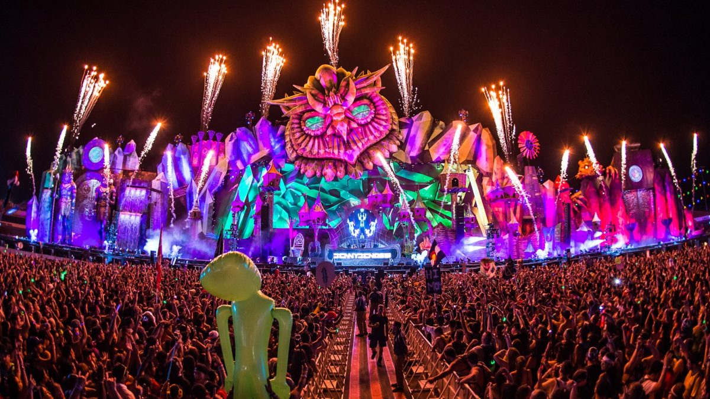

"La música expresa todo aquello que no puede decirse con palabras y no puede quedar en el silencio."
El Festival de Música de Morelia Miguel Bernal Jiménez surgió en julio de 1989 con el objetivo de fomentar y de ampliar la enseñanza musical. De la mano del Conservatorio de Las Rosas, primer conservatorio de América, y con base en el proyecto del ilustre compositor michoacano Miguel Bernal Jiménez, ha conseguido a lo largo de 30 años presentar a los más grandes exponentes de la música de concierto de todo el mundo. El Festival se ha convertido en una importante vitrina para los grandes músicos mexicanos y se ha constituido como un enlace entre los alumnos de los conservatorios del país y los grandes músicos que participan en cada una de sus ediciones a través de cursos y clases magistrales.